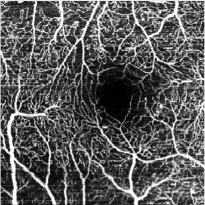
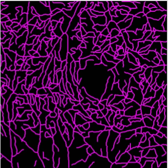
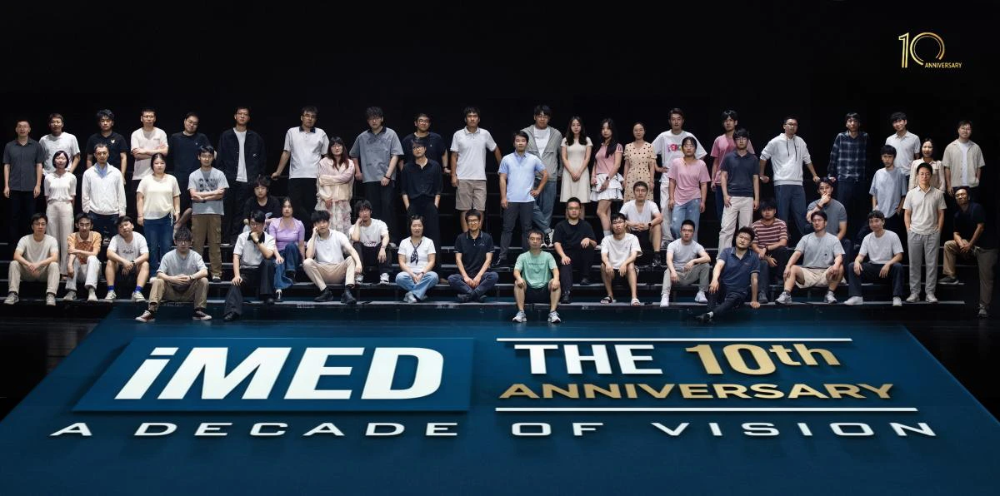
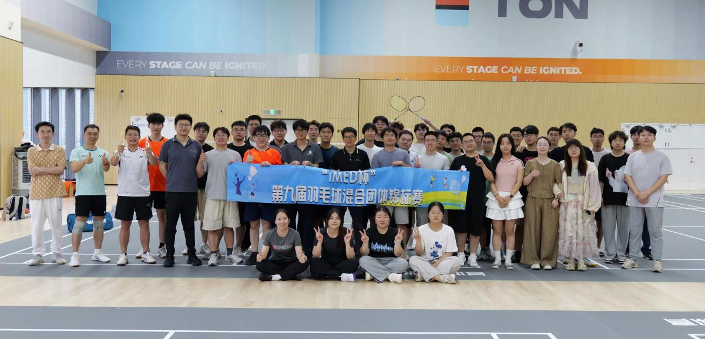

INTELLIGENT MEDICAL IMAGING · NIMTE
用智能影像
理解生命的细节
iMED中国聚焦医学影像分析、眼脑联合计算与临床智能诊疗，连接算法、数据和真实世界的医疗需求。
MULTI-MODAL · 01
RETINAL IMAGING · iMED

 FUNDUS · 眼底影像
FUNDUS · 眼底影像
SEGMENTATION · 血管标注01 精准医疗02 医工交叉03 开放协作
LATEST UPDATES
最新动态

团队风采 · 2026青春作伴，十载同行：iMED十周年暨第九届“iMED杯”羽毛球赛
十载春秋，步履不停；青春作伴，未来可期。记录团队共同成长的珍贵时刻。
032026.09论文发表
Two papers have been accepted by IOVS and JAHA
→282026.08论文发表One paper has been accepted by IEEE Trans Image Process (TIP)
→212026.08论文发表One paper has been accepted by Medical Image Analysis
→302026.07学术活动高可信心血管磁共振智能分析专题讲座：无造影剂微血管阻塞识别----动态心脏磁共振成像中的机遇与挑战
→302026.07学术活动iMED中国分享会（七十三讲）Contrast-Free Microvascular Obstruction Identification: Opportunities and Recent
→152026.06团队活动青春作伴，十载同行——iMED十周年暨第九届“iMED杯”羽毛球赛圆满举行
→132026.06论文发表Nine MICCAI Papers have been accepted this year
→252026.05论文发表One paper has been accepted by IEEE Trans Med. Imaging (TMI)
→152026.05团队活动智能医学影像团队硕士研究生毕业答辩顺利举行
→072026.05团队活动智能医学影像团队硕士研究生毕业答辩顺利举行
→292026.04团队活动iMED团队赴宁波象山春游
→232026.04论文发表One paper is accepted by Medical Image Analysis
→172026.04团队活动大模型赋能智慧医疗：挑战和未来
→152026.04学术活动高可信医学智能诊断专题讲座：从高精度到高可信：基于不确定性估计的视网膜疾病智能诊断
→152026.04团队活动Dr Zhao has been appointed as Associate Editor of IEEE TIP
→152026.04学术活动iMED中国分享会（七十二讲）大模型赋能智慧医疗：挑战和未来
→082026.04学术活动iMED中国分享会（七十一讲）从高精度到高可信：基于不确定性估计的视网膜疾病智能诊断
→062026.04论文发表New work has been accepted by npj Digital Medicine
→042026.04论文发表One paper has been accepted by IEEE TIP
→232026.03团队活动聚焦人工智能与眼科影像
→202026.03学术活动iMED中国分享会（七十讲）基于人工智能的眼科医学影像分析
→122026.02团队活动马煜辉的iMED七年：感恩、成长与再启航
→222026.01论文发表One paper has been accepted by Medical Image Analysis
→152026.01学术活动分享会-欢迎周毅博士
→132026.01团队活动团队科研成果荣获“2025年度眼科学中国十大原创进展”
→042026.01学术活动iMED中国分享会（六十九讲）Masked vascular structure segmentation and completion in retinal images
→012026.01团队活动元旦晚会
→012025.12团队活动iMED团队秋季团建圆满举行：秋行逸趣，一路变“豪”
→


SELECTED WORKS
代表性成果
IOVS / JAHA · 论文录用动态
Retinal and Choroidal Vascular Metrics Predict Cerebral Atrophy and Cognitive Impairment in Noninfarcted Large Artery Stenosis
IEEE TIPConsistency-guided Uncertainty Estimation for Source-Free Medical Image Segmentation
MEDICAL IMAGE ANALYSISA Frequency-aware Dual-domain Collaborative Framework for Medical Image Enhancement

A CROSS-DISCIPLINARY COMMUNITY
一群人，做一件
有长期价值的事
团队拥有计算机图像处理、大数据分析、医学、光学、生物医学工程、公共卫生及统计学等多学科背景。我们相信，真实的临床问题需要跨越学科边界的共同回答。
认识 iMED 中国 →